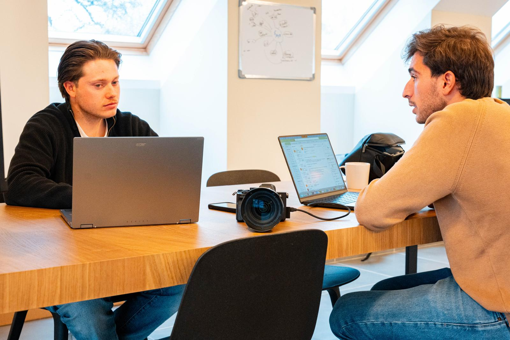

Mijn verhaal,
van toen naar straks.
Een terugblik op mijn opleiding, een eerlijke blik op wie ik vandaag ben, en de richting die ik kies voor wat komt. Eén doorlopend verhaal, waarin alle twaalf de vragen beantwoord worden.
Lees mee, of spring rechts naar een vraag.

Hoe ben ik hier geraakt?
Voor ik vooruitkijk, kijk ik even achteruit. Naar de weg, de lessen en de plekken waar het echt begon te leven.
Toen ik aan deze opleiding begon, dacht ik vooral aan theorie: modellen, begrippen, presentaties. Wat ik onderweg leerde, ging veel verder dan dat. Ik leerde hoe het er écht aan toe gaat in een bedrijf, niet uit een boek maar op de werkvloer zelf.
De grootste lessen waren geen losse feiten, maar manieren van werken. Ik ontdekte hoe belangrijk teamwork en heldere communicatie zijn om iets goed af te krijgen, hoe je een idee vertaalt naar iets concreets, en hoe je blijft bijsturen tot het klopt. Stap voor stap groeide ook het besef van wat ik later écht graag wil doen.
Als ik terugkijk op wat ik bereikte, ben ik niet zozeer trots op één opdracht of één cijfer, maar op drie dingen die in mij gegroeid zijn en die ik in elk project terugzag.
Doorzetten, samenwerken en georganiseerd communiceren. Dat is wat me het meest is bijgebleven.
Ik bleef gemotiveerd, ook wanneer iets moeilijk werd: ik geef niet snel op en zoek door tot ik een oplossing vind. Ik merkte dat ik graag samenwerk en bewust een positieve sfeer in een team breng: luisteren, meedenken en zorgen dat iedereen mee is. En ik ontdekte dat ik georganiseerd werk en sterk ben in communiceren: afspraken helder maken en misverstanden vermijden.
De plek waar al die lessen echt tot leven kwamen, was het werkplekleren. Twee stages vormden samen mijn praktijkverhaal, elk met een eigen wereld, ritme en takenpakket.
Carrobel
Bij Carrobel kreeg ik een breed takenpakket binnen marketing en communicatie van een bedrijf in bouw en renovatie. Ik leerde hoe je een doelgroep bereikt, content maakt die inspeelt op de klantreis en vertrouwen opbouwt. Ik ging mee de werf op, wat me hielp om realistische, relevante content te maken. Een sterk fundament in strategie, contentcreatie en analytisch denken.
JLM Agency
Bij JLM Agency werkte ik in een dynamische social media omgeving waar snelheid en creativiteit centraal staan. Ik groeide in contentcreatie, planning en het begrijpen van digitale campagnes, en leerde trends vertalen naar relevante content. Deze stage versterkte mijn skills in communicatie, organisatie en digitale marketing.
Waar sta ik vandaag?
Twee jaar later ken ik mezelf beter dan toen ik begon: mijn sterktes, mijn valkuilen en wat me drijft.
Wat ik vroeger vermoedde, weet ik nu zeker. Mijn sterke punten zijn dat ik gemotiveerd ben en doorzet wanneer iets moeilijk wordt, dat ik graag samenwerk en een positieve sfeer in een team breng, en dat ik redelijk georganiseerd ben en mijn taken graag duidelijk plan.
Het mooiste talent ontdekte ik gaandeweg: ik ben goed in communiceren met anderen. Of het nu gaat om een klant, een collega of een doelgroep, ik vind het makkelijk en fijn om de juiste boodschap helder over te brengen.
Eerlijk zijn hoort er ook bij. Een werkpunt van mij is dat ik dingen soms te lang uitstel wanneer het druk wordt, waardoor er net voor een deadline meer stress kan ontstaan. Daar werk ik aan door beter te plannen en taken op tijd te beginnen.
Een tweede werkpunt: ik ben soms te kritisch voor mezelf. Naar de toekomst toe wil ik leren om meer vertrouwen te hebben in mijn eigen werk en in te zien dat “goed” vaak ook echt goed genoeg is.
Om mezelf echt te begrijpen, maakte ik een zelfanalyse met het kernkwadrant van Ofman. Het laat mooi zien hoe mijn grootste kracht en mijn grootste valkuil twee kanten van dezelfde medaille zijn.
Ik ben een doorzetter. Wanneer ik een doel heb, wil ik dat ook echt bereiken.
Ik kan te koppig zijn en moeite hebben om los te laten wanneer iets niet perfect loopt.
Wat flexibeler zijn en openstaan voor andere ideeën, ook als het anders loopt dan gepland.
Mensen die niet gemotiveerd zijn of hun taken niet serieus nemen.
Waar zie ik mezelf gaan?
De opleiding loopt op zijn einde, maar het verhaal niet. Dit is de richting die ik kies.
Op korte termijn wil ik vooral werkervaring opdoen in een bedrijf waar ik mezelf verder kan ontwikkelen. Ik zoek een job waarin ik nieuwe dingen leer en verantwoordelijkheid krijg, waar ik met mensen samenwerk en waar er ruimte is om te groeien.
Ik pak dat stap voor stap aan. Eerst zorg ik dat mijn basis klopt, daarna ga ik gericht op zoek. Ik wacht niet af tot de juiste vacature voorbijkomt.
- 01CV & LinkedIn verder verbeteren en scherpstellen.
- 02Vacatures zoeken op LinkedIn en VDAB.
- 03Spontaan solliciteren bij bedrijven die me interesseren, ook zonder vacature.
- 04Netwerken met mensen uit de sector om kansen te vinden.
Mijn ideale functie is er een waarin ik met mensen samenwerk en waar communicatie een hoofdrol speelt. Ik werk graag in een dynamische omgeving waar geen enkele dag hetzelfde is, en het is voor mij belangrijk dat ik mezelf kan blijven ontwikkelen en nieuwe vaardigheden kan leren.
Ik zou graag werken in een bedrijf met een goede sfeer tussen collega's, waar teamwork belangrijk is. Een modern bedrijf dat openstaat voor nieuwe ideeën en innovatie spreekt me het meeste aan, met duidelijke mogelijkheden om te groeien en bij te leren.
Op dit moment wil ik eerst werkervaring opdoen en ontdekken welke richting me het meest interesseert. Het kan goed dat ik later nog een extra opleiding of cursus volg om mijn kennis te verbreden. Bijleren blijft sowieso belangrijk, zeker in een wereld die zo snel verandert.
Als ik heel eerlijk terugkijk, had ik met sommige opdrachten vroeger kunnen beginnen. Daardoor had ik op bepaalde momenten minder stress gehad. Toch zie ik dat niet als spijt, maar als een leerervaring: net door die momenten besef ik hoe belangrijk planning en tijdsbeheer zijn. Een les die ik meeneem naar alles wat nog komt.